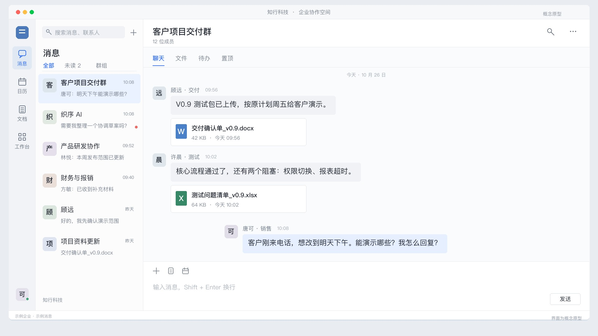
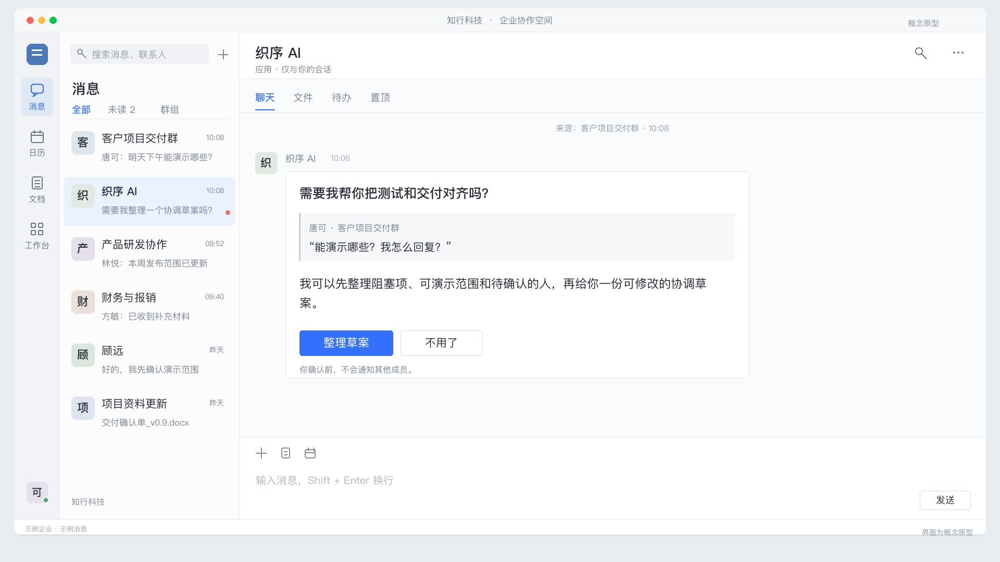
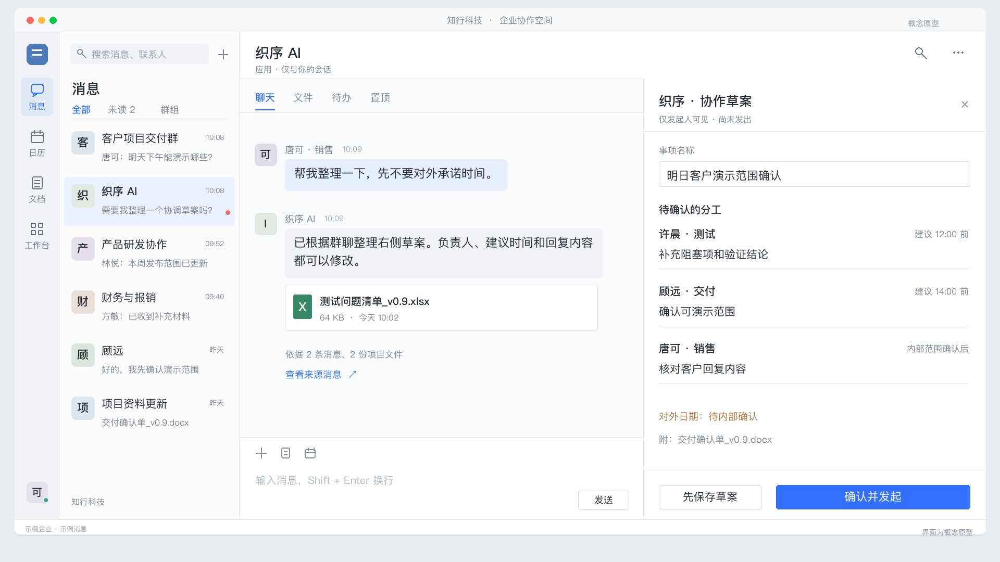
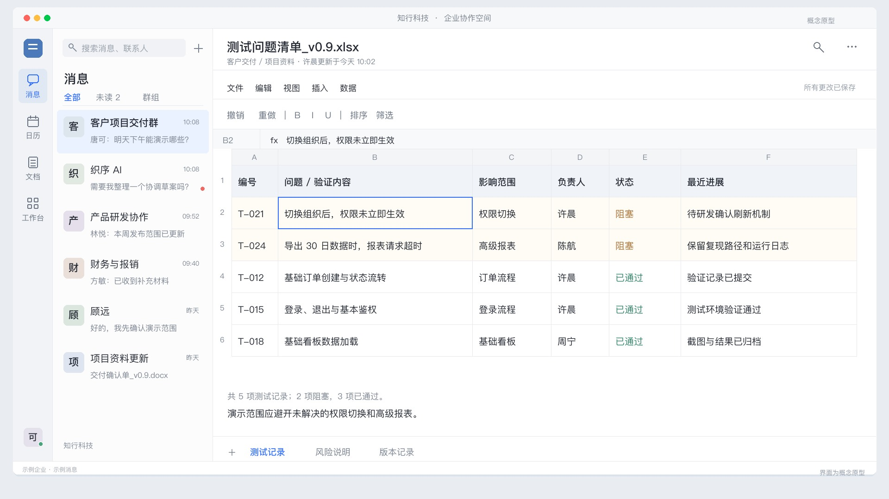
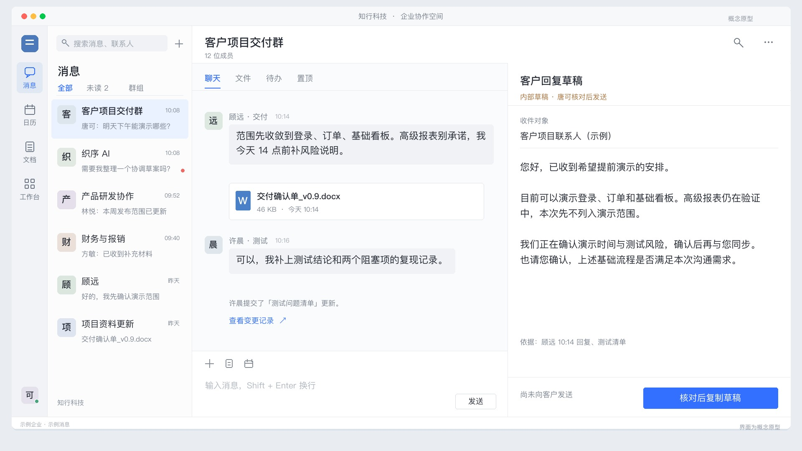
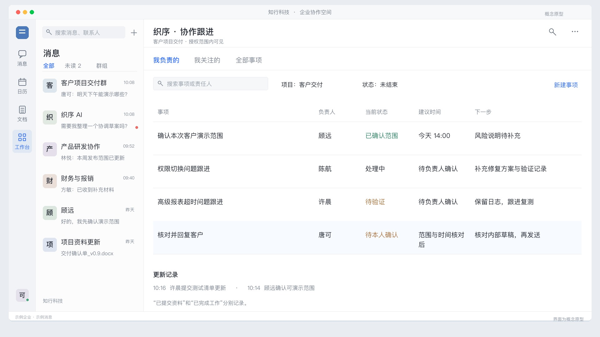

回到日常工作的现场。
上线、交付、报销、变更、入职和采购。保留文件、时间、责任人和人员反馈，使用真实办公实拍与电脑端概念界面穿插呈现。












本页为新版六场景画面预览。软件画面、企业、消息与业务情节均为概念示意，并非真实平台录屏。GPT 男声待语音服务配置就绪后合成；当前视频无旁白。办公实拍素材：Artem Podrez、Bonus Studio，按 Pexels License剪辑使用，演员并非产品实际员工或客户。